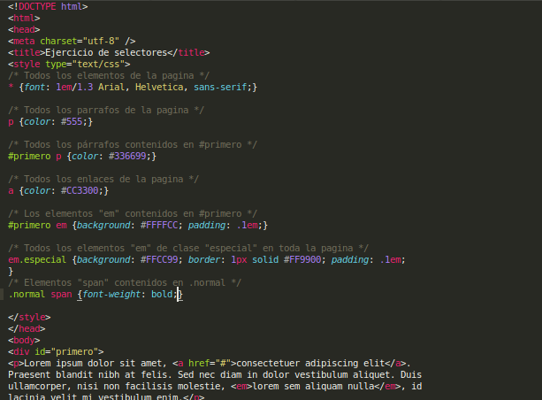
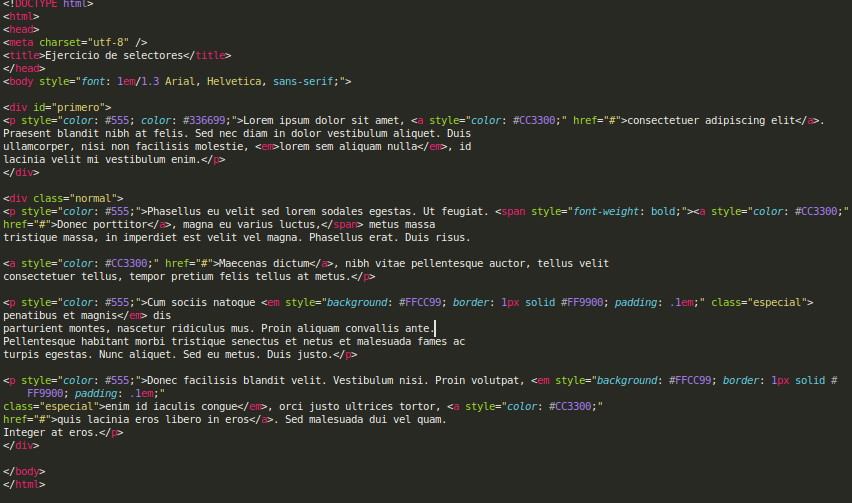
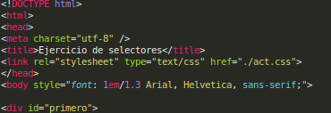
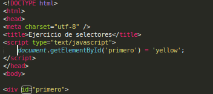

La primera forma simplemente es poner el estilo CSS en la etiqueta style del head del mismo index.html
La segunda forma es añadir el CSS en un fichero externo. Se añade en la etiqueta link en el head, con su atributo href para indicar en qué archivo se encuentra el CSS.
Agregar el atributo style en cada elemento al que quieres poner CSS, con las reglas de estilo que quieras para ese elemento.
Usariamos la segunda forma que he puesto antes, pero ahora en el archivo CSS principal que estamos gastando, podemos importar otros archivos CSS, usando una ruta realativa a éste.
Primero declarariamos el fichero CSS en el html:
Y suponiendo que tenemos mitad CSS en act.css y otra mitad en act_2.css, el primero importa al segundo:
Esta forma se usa para inyectar CSS con javascript. Ya que es muy larga, voy a poner un ejemplo sencillo sobre este ejercicio:
De esta forma pondria a los elementos con el id "primero" con color de fondo amarillo.